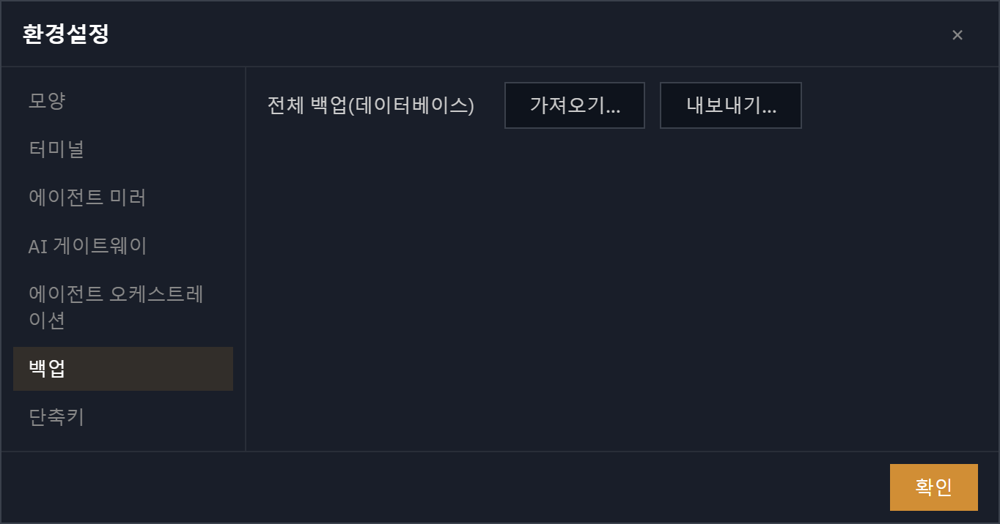

그 외 · 시스템 · 저장 · 백업
저장 · 백업
설정·워크스페이스·할 일을 모두 한 곳에 자동 저장합니다. 쓰다가 앱이 꺼져도 깨지지 않고, 매일 자동으로 백업되며, 전체 설정을 한 파일로 내보내고 가져올 수 있습니다 — 직접 손댈 것은 없습니다.
한 파일에 전부 저장
설정, 열어 둔 스페이스와 탭, 할 일까지 모든 상태가 데이터 폴더 안의 단일 파일 orchterm.db에 담깁니다. 개발용·릴리즈용·워크트리는 각자 별도 폴더를 써서 서로 섞이지 않습니다.
이전 설정 자동 이관
예전 버전을 쓰던 분이 새 버전으로 처음 부팅하면, 기존 설정이 새 저장소로 한 번에 자동으로 옮겨집니다(설정·테마·스페이스·할 일 모두 보존). 원본은 settings.json.migrated로 남겨 두니 따로 할 일은 없습니다.
자동 백업 · 복구
부팅할 때마다 그날의 백업을 하나 남기고(최근 10개 유지) 저장 파일이 멀쩡한지 검사합니다. 깨진 게 발견되면 가장 최근의 정상 백업에서 자동으로 복구하고 알려 줍니다.
데이터 폴더 — 일일 .bak 회전quick_check ✓
# 부팅 시 하루 1개 .bak 생성 · 10개까지 회전
$ ls -la ~/.orchterm
orchterm.db 464K ← 라이브 DB
orchterm.db-wal 132K ← WAL 저널(쓰기)
orchterm.db-shm 32K ← 공유 메모리 인덱스
orchterm.db.bak.2026-06-28 452K
orchterm.db.bak.2026-06-27 448K
orchterm.db.bak.2026-06-26 447K … (10개 초과는 오래된 것부터 폐기)
settings.json.migrated 116K ← 이관 후 원본 보존
[db] quick_check ok — backup orchterm.db.bak.2026-06-28 (rotated)
① 백업(
.bak)은 깔끔한 단일 파일 스냅샷 · ② 검사에 실패하면 최신 정상 백업에서 자동 복구.전체 백업 — 내보내기 · 가져오기
설정 → 백업에서 전체 설정을 한 파일로 내보내거나, 백업 파일로 현재 데이터를 통째로 교체할 수 있습니다. 가져오기는 즉시 적용되지 않고 다음 재시작 때 안전하게 교체됩니다.

① 내보내기 = 설정+워크스페이스+할 일 전체를 한
.db 파일로 저장 · ② 가져오기 = 검증 후 재시작 때만 교체.가져오기는 현재 데이터를 통째로 교체합니다 — 확인을 거친 뒤 앱이 재시작됩니다. 직전 상태는
.pre-import 파일로 자동 보존돼 되돌릴 수 있습니다.데이터 폴더 파일
| 파일 | 역할 |
|---|---|
orchterm.db | 모든 설정·스페이스·할 일이 담긴 저장 파일 |
orchterm.db.bak.YYYY-MM-DD | 매일 만들어지는 백업 — 최근 10개 유지 |
settings.json.migrated | 이관 후 보존된 예전 설정 원본 |
orchterm.db.<stamp>.pre-import | 가져오기 직전 상태 — 되돌리기용 |